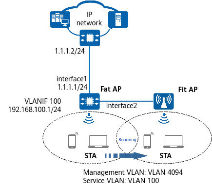

Example for Configuring Roaming on a Network with Both Fat and Fit APs (Fat AP)
Applicable Products and Versions
This example applies to AR routers that run V600R024C10 and later versions and contain W in the model name (for example, AR5710-S8T1XWE).
Overview
This section provides a typical example for configuring roaming on a network with both Fat and Fit APs. It presents a detailed plan of WLAN network deployment on routers at the branch and HQ, provides the configuration example based on the plan, and offers references for networking planning and device configuration.
Networking Requirements
A small enterprise needs to provide WLAN services for its employees and requires nonstop service transmission when the employees move within the enterprise. Because only a small area requires WLAN coverage, one Fat AP and one Fit AP can be deployed to cover the office area.

In this example, interface1 and interface2 represent MultiGE0/0/0 and GE0/0/1, respectively.
NAT is configured on interface1, the public IP address is set to 1.1.1.1/24, and the IP address of the peer carrier device is set to 1.1.1.2/24. The Fat AP is connected to the Fit AP through interface2.

Configuration Roadmap
- Configure an IP address and TCP Maximum Segment Size (TCP-MSS) for the WAN-side interface of the Fat AP, and configure source NAT to translate private addresses into public addresses for Internet access.
- Configure a DHCP server on the LAN side of the Fat AP to assign IP addresses to STAs, and configure a default route to ensure that STAs connected to the Fat AP can communicate with the Internet.
- Configure the Fit AP to go online.
- Add the Fat AP and Fit AP to an AP group for unified configuration.
- Import the Fit AP so that it can go online.
- Configure basic WLAN functions so that STAs can access the WLAN.
Data Planning
Item |
Data |
|---|---|
Management VLAN for APs |
VLAN 4094, which exists on a Fat AP by default and does not need to be configured |
Service VLAN for STAs |
VLAN 100 |
DHCP server |
The Fat AP functions as a DHCP server to assign IP addresses to APs and STAs. |
IP address pool for APs |
169.254.255.2–169.254.255.254/24, which exists on a Fat AP by default and does not need to be configured |
IP address pool for STAs |
VLANIF 100: 192.168.100.2–192.168.100.254/24 |
CAPWAP source interface |
VLANIF 4094, which exists on a Fat AP by default and does not need to be configured |
AP group |
|
Regulatory domain profile |
|
SSID profile |
|
Security profile |
|
VAP profile |
|
Precautions
- In the factory configuration file, the CAPWAP source interface is VLANIF 4094 for a Fat AP, and the management VLAN for a built-in AP or a Fit AP is VLAN 4094. Configure the interface that directly connects the Fat AP to the Fit AP to allow packets from management VLAN 4094 to pass through. In this case, VLAN 4094 cannot be used as the service VLAN for STAs. Therefore, to use VLAN 4094 as the service VLAN for STAs, you must change the management VLAN to another VLAN.
- By default, a Fat AP is added to the AP group built_in_ap. If you create an AP group and add the Fat AP to it, the built-in AP goes offline and then online again.
Procedure
- On the Fat AP, configure an IP address and TCP-MSS for the WAN-side interface, and configure source NAT.# Configure an IP address and TCP-MSS for MultiGE0/0/0 on the Fat AP, and enable NAT on the interface.
<HUAWEI> system-view [HUAWEI] sysname FAT AP [FAT AP] interface MultiGE0/0/0 [FAT AP-MultiGE0/0/0] ip address 1.1.1.1 24 [FAT AP-MultiGE0/0/0] tcp adjust-mss 1200 [FAT AP-MultiGE0/0/0] nat enable [FAT AP-MultiGE0/0/0] quit
# Configure a source NAT policy in Easy IP mode on the Fat AP.[FAT AP] nat-policy [FAT AP-policy-nat] rule name policy_nat1 [FAT AP-policy-nat-rule-policy_nat1] source-address any [FAT AP-policy-nat-rule-policy_nat1] action source-nat easy-ip [FAT AP-policy-nat-rule-policy_nat1] quit [FAT AP-policy-nat] quit
- Configure the DHCP server on the Fat AP.# Add VGE0/0/0 and GE0/0/1 connected to the Fit AP to VLAN 100 in tagged mode, and allow packets from management VLAN 4094 to pass through.
[FAT AP] vlan batch 100 [FAT AP] interface VGE 0/0/0 [FAT AP-VGE0/0/0] port hybrid tagged vlan 100 [FAT AP-VGE0/0/0] quit [FAT AP] interface GE 0/0/1 [FAT AP-GE0/0/1] port hybrid tagged vlan 100 [FAT AP-GE0/0/1] port hybrid pvid vlan 4094 [FAT AP-GE0/0/1] port hybrid untagged vlan 4094 [FAT AP-GE0/0/1] quit
# On the Fat AP, configure VLANIF 100 to assign IP addresses to STAs and configure a default route with the next hop being the IP address of the carrier device. Configure a DNS server address as required. The common methods are as follows:- In an interface address pool scenario, run the dhcp server dns-list ip-address &<1-8> command in the VLANIF interface view.
- In a global address pool scenario, run the dns-list ip-address &<1-8> command in the IP address pool view.
[FAT AP] dhcp enable [FAT AP] interface vlanif 100 [FAT AP-Vlanif100] ip address 192.168.100.1 24 [FAT AP-Vlanif100] dhcp select interface [FAT AP-Vlanif100] quit [FAT AP] ip route-static 0.0.0.0 0.0.0.0 1.1.1.2
- Configure the Fit AP to go online.
- Create an AP group and add the Fat AP and Fit AP to the group for unified configuration.
[FAT AP] wlan [FAT AP-wlan] ap-group name default [FAT AP-wlan-ap-group-default] quit [FAT AP-wlan] quit
# Create a regulatory domain profile, configure a country code in the profile, and bind the profile to the AP group.[FAT AP] wlan [FAT AP-wlan] regulatory-domain-profile name default [FAT AP-wlan-regulate-domain-default] country-code cn [FAT AP-wlan-regulate-domain-default] quit [FAT AP-wlan] ap-group name default [FAT AP-wlan-ap-group-default] regulatory-domain-profile default Warning: This configuration change will clear the channel and power configurations of radios, and may restart APs. Continue? [Y/N]:y [FAT AP-wlan-ap-group-default] quit [FAT AP-wlan] quit [FAT AP]
- Import the Fit AP so that it can go online.
[FAT AP] wlan [FAT AP-wlan] ap auth-mode mac-auth [FAT AP-wlan] ap-id 1 ap-mac 64c3-9408-c6d0 [FAT AP-wlan-ap-1] ap-name ap2 [FAT AP-wlan-ap-1] ap-group default Warning: This operation may cause AP to go offline and then online. If the country code changes, it will clear channel, power and antenna gain configurations of the radio, Whether to continue? [Y/N]:y [FAT AP-wlan-ap-1] quit [FAT AP-wlan]
# Add the Fat AP to the same AP group.[FAT AP-wlan] ap-id 0 ap-mac 00fc-2255-3500 [FAT AP-wlan-ap-0] ap-group default Warning: This operation may cause AP to go offline and then online. If the country code changes, it will clear channel, power and antenna gain configurations of the radio, Whether to continue? [Y/N]:y [FAT AP-wlan-ap-0] quit [FAT AP-wlan]
# Power on the Fat AP, and then run the display ap all command to check the AP status. If the State field in the command output is displayed as nor, the AP has gone online.[FAT AP-wlan] display ap all Total AP information: nor : normal [2] ExtraInfo : Extra information Total: 2 ----------------------------------------------------------------------------------------------------------------- ID MAC Name Group IP Type State STA Uptime ExtraInfo ----------------------------------------------------------------------------------------------------------------- 0 00fc-2255-3500 built_in_ap default 169.254.255.78 AR5710-S8T1XWE nor 0 1M:30S - 1 64c3-9408-c6d0 ap2 default 169.254.255.245 AirEngine5773-22P nor 0 9H:58M:51S - -----------------------------------------------------------------------------------------------------------------
- Create an AP group and add the Fat AP and Fit AP to the group for unified configuration.
- Configure basic WLAN functions so that STAs can access the WLAN.# Create the security profile wlan-net and configure a security policy in the profile.
In this example, the security policy is set to WPA-WPA2+PSK+AES and the password to YsHsjx_202206. In actual situations, configure the security policy based on service requirements.
[FAT AP] wlan [FAT AP-wlan] security-profile name wlan-net [FAT AP-wlan-sec-prof-wlan-net] security wpa-wpa2 psk pass-phrase YsHsjx_202206 aes [FAT AP-wlan-sec-prof-wlan-net] quit
# Create the SSID profile wlan-net and set the SSID name to wlan-net.[FAT AP-wlan] ssid-profile name wlan-net [FAT AP-wlan-ssid-prof-wlan-net] ssid wlan-net [FAT AP-wlan-ssid-prof-wlan-net] quit
# Create the VAP profile wlan-net, set the service data forwarding mode and service VLAN, and bind the security profile and SSID profile to the VAP profile.
[FAT AP-wlan] vap-profile name wlan-net [FAT AP-wlan-vap-prof-wlan-net] service-vlan vlan-id 100 [FAT AP-wlan-vap-prof-wlan-net] security-profile wlan-net [FAT AP-wlan-vap-prof-wlan-net] ssid-profile wlan-net [FAT AP-wlan-vap-prof-wlan-net] quit
# Bind the VAP profile wlan-net to radios 0 and 1 of APs in the AP group.
[FAT AP-wlan] ap-group name default [FAT AP-wlan-ap-group-default] vap-profile wlan-net wlan 1 radio 0 [FAT AP-wlan-ap-group-default] vap-profile wlan-net wlan 1 radio 1 [FAT AP-wlan-ap-group-default] quit [FAT AP-wlan]
- Enable radio calibration to allow APs to automatically select the optimal channels and power.
[FAT AP-wlan] ap-group name default [FAT AP-wlan-ap-group-default] radio 0 [FAT AP-wlan-ap-group-default-radio-0] calibrate auto-channel-select enable [FAT AP-wlan-ap-group-default-radio-0] calibrate auto-txpower-select enable [FAT AP-wlan-ap-group-default-radio-0] quit [FAT AP-wlan-ap-group-default] radio 1 [FAT AP-wlan-ap-group-default-radio-1] calibrate auto-channel-select enable [FAT AP-wlan-ap-group-default-radio-1] calibrate auto-txpower-select enable [FAT AP-wlan-ap-group-default-radio-1] quit [FAT AP-wlan-ap-group-default] quit [FAT AP-wlan]
Verifying the Configuration
[FAT AP] display vap ssid wlan-net WID : WLAN ID Total: 4 ------------------------------------------------------------------------------------------- AP ID AP name RfID WID BSSID Status Auth type STA SSID Radio Type ------------------------------------------------------------------------------------------- 0 built_in_ap 0 1 00FC-2255-3500 ON WPA/WPA2-PSK 0 wlan-net 11be 0 built_in_ap 1 1 00FC-2255-3510 ON WPA/WPA2-PSK 0 wlan-net 11be 1 ap2 0 1 64C3-9408-C6D0 ON WPA/WPA2-PSK 0 wlan-net 11be 1 ap2 1 1 64C3-9408-C6E0 ON WPA/WPA2-PSK 1 wlan-net 11be -------------------------------------------------------------------------------------------
[FAT AP] display station ssid wlan-net Rf/WLAN: Radio ID/WLAN ID Rx/Tx: link receive rate/link transmit rate(Mbps) Total: 9 2.4G: 1 5G: 8 6G: 0 --------------------------------------------------------------------------------------------- STA MAC AP ID Ap name Rf/WLAN Band Type Rx/Tx RSSI VLAN IP address --------------------------------------------------------------------------------------------- 12e2-350c-730a 0 built_in_ap 0/1 2.4G 11ax 14/58 -87 100 192.168.100.35 46b5-06b6-616a 0 built_in_ap 1/1 5G 11ax 6/458 -35 100 192.168.100.96 5a23-f7f1-fbe8 1 ap2 1/1 5G - -/- - 100 192.168.100.49 b227-daba-1c5b 1 ap2 1/1 5G 11ax 390/325 -61 100 192.168.100.220 b27a-eac4-1d39 1 ap2 1/1 5G - -/- - 100 192.168.100.44 c611-79e4-e223 1 ap2 1/1 5G - -/- - 100 192.168.100.100 e62c-b93e-05e2 1 ap2 1/1 5G 11be 6/412 -50 100 192.168.100.240 f287-6a88-8c30 0 built_in_ap 1/1 5G 11be 6/234 -51 100 192.168.100.192 f2ad-3185-8140 0 built_in_ap 1/1 5G 11be 6/458 -38 100 192.168.100.101 ---------------------------------------------------------------------------------------------
Configuration Scripts
#
sysname FAT AP
#
vlan batch 100
#
dhcp enable
#
interface Vlanif100
ip address 192.168.100.1 255.255.255.0
dhcp select interface
#
interface MultiGE0/0/0
ip address 1.1.1.1 255.255.255.0
nat enable
tcp adjust-mss 1200
#
interface VGE0/0/0
portswitch
description Connected to built_in_ap
port hybrid pvid vlan 4094
port hybrid tagged vlan 1 100
port hybrid untagged vlan 4094
#
interface GE0/0/1
portswitch
port hybrid tagged vlan 100
port hybrid pvid vlan 4094
port hybrid untagged vlan 4094
#
ip route-static 0.0.0.0 0.0.0.0 1.1.1.2
#
nat-policy
rule name policy_nat1
action source-nat easy-ip
#
capwap source interface vlanif 4094
#
wlan
traffic-profile name default
security-profile name default
security-profile name wlan-net
security wpa-wpa2 psk pass-phrase %+%##!!!!!!!!!"!!!!"!!!!*!!!!7LTnVOK_g:srhRX8<E+A%w7dOASw5$GAz_(!!!!!2jp5!!!!!!:!!!!&]{,'_ev)65z
{d'*UA-3,-PdA3;Tf6~D9>C!!!!!%+%# aes
security-profile name built_in_ap
security wpa2 psk pass-phrase %+%##!!!!!!!!!"!!!!"!!!!*!!!!7LTnVOK_g:fwV#*S~Mk#NEG6HYj_t+2vO[Q!!!!!2jp5!!!!!!9!!!!\1'jQyXC/PGckf6k
p.66@q%:Gz{x8$!!!!!!!!!!%+%# aes
ssid-profile name default
ssid-profile name wlan-net
ssid wlan-net
ssid-profile name built_in_ap
ssid PnP_757933
vap-profile name default
vap-profile name wlan-net
service-vlan vlan-id 100
ssid-profile wlan-net
security-profile wlan-net
vap-profile name built_in_ap
ssid-profile built_in_ap
security-profile built_in_ap
regulatory-domain-profile name default
air-scan-profile name default
rrm-profile name default
radio-2g-profile name default
radio-5g-profile name default
ap-system-profile name default
port-link-profile name default
wired-port-profile name default
ap auth-mode no-auth
ap-group name default
radio 0
vap-profile wlan-net wlan 1
radio 1
vap-profile wlan-net wlan 1
ap-group name built_in_ap
radio 0
vap-profile built_in_ap wlan 1
radio 1
vap-profile built_in_ap wlan 1
ap-id 0 type-id 15 ap-mac 00fc-2255-3500 ap-sn 102428757933
ap-name built_in_ap
ap-id 1 type-id 219 ap-mac 64c3-9408-c6d0 ap-sn 4E2460117367
ap-name ap2
provision-ap
#
return